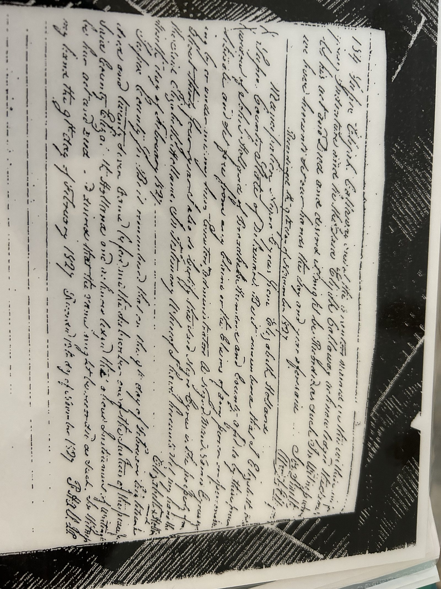
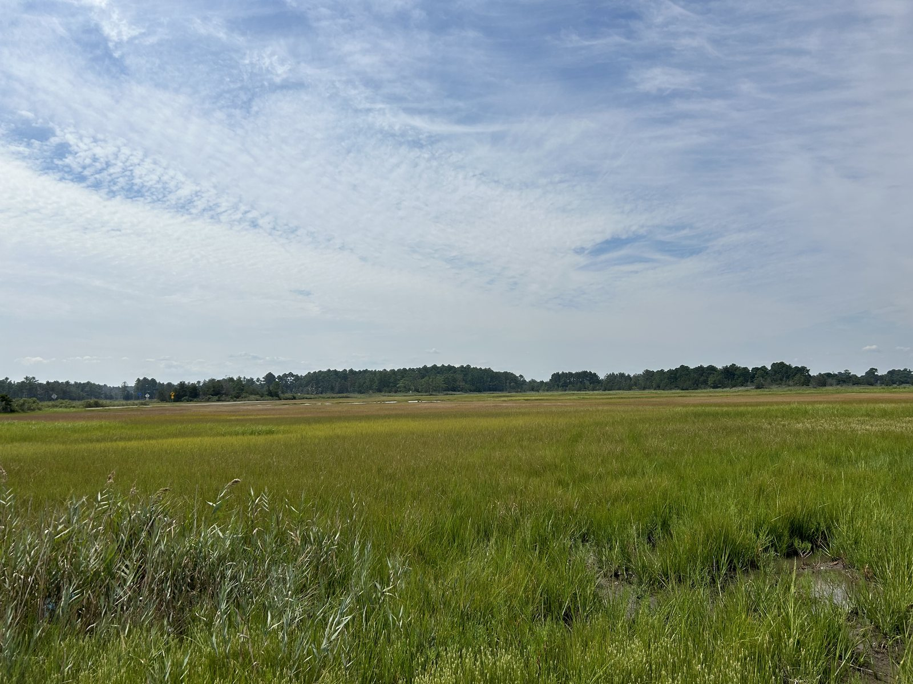
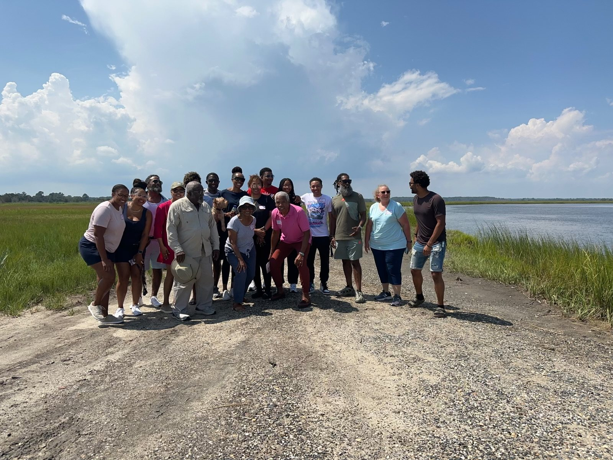

On February 9, 1827, Cyrus Holland — born enslaved on a Sussex County, Delaware tobacco plantation — was freed by Elizabeth Holland, more than three decades before the Emancipation Proclamation. This is the story of what he, and the generations after him, built.
Why this site exists
That's how Hon. Wendell F. Holland once answered his young daughter's question about their family's history — and it's the line that anchors everything on this site. Piecing together roughly 250 years of records, wills, freedom papers, census pages, and stories passed down at kitchen tables, the Holland family has traced its line from an enslaved man named Limerick in 1755, through Cyrus Holland's freedom in 1827, into a family of watermen on the Broadkill River, and forward to the reunions we hold today.
This site gathers that research in one place: the family history, the oyster-trade legacy that shaped Oysterrocks, and the photographs and documents the family has preserved.
February 9, 2027 marks 200 years since Elizabeth Holland freed Cyrus Holland — the first Holland to gain his freedom, and the reason our family marks February 9th as "Holland Day" every year.
Explore

From Limerick and Comfort to Cyrus's freedom papers, his 1845 land purchase, and the descendants who followed — told from Wendell F. Holland's own research.
Read the story →
How free Black watermen — and the Hollands specifically — worked the Delaware Bay oyster trade, and the road and farm at Oysterrocks that still carry the name.
See the legacy →
Freedom papers, an 1860 census page, family portraits, gravestones, and photos from family reunions and history tours in Lewes.
Browse the archive →